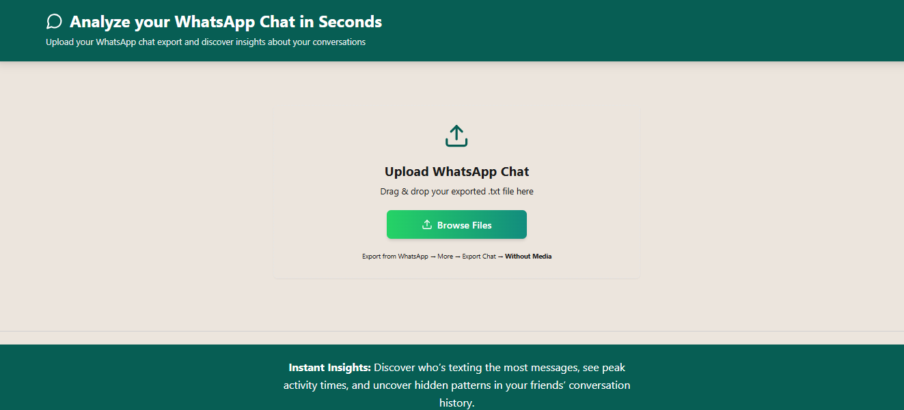
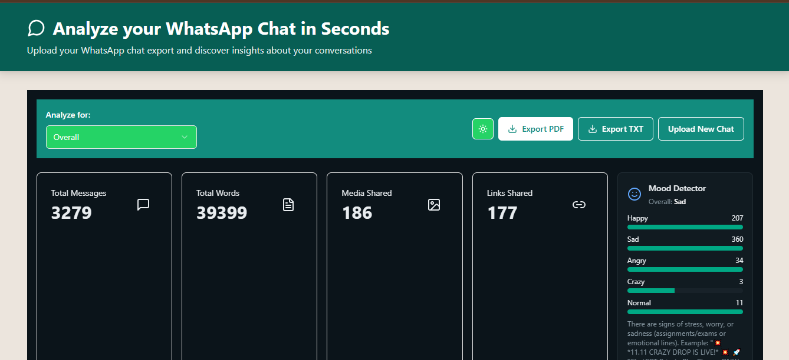
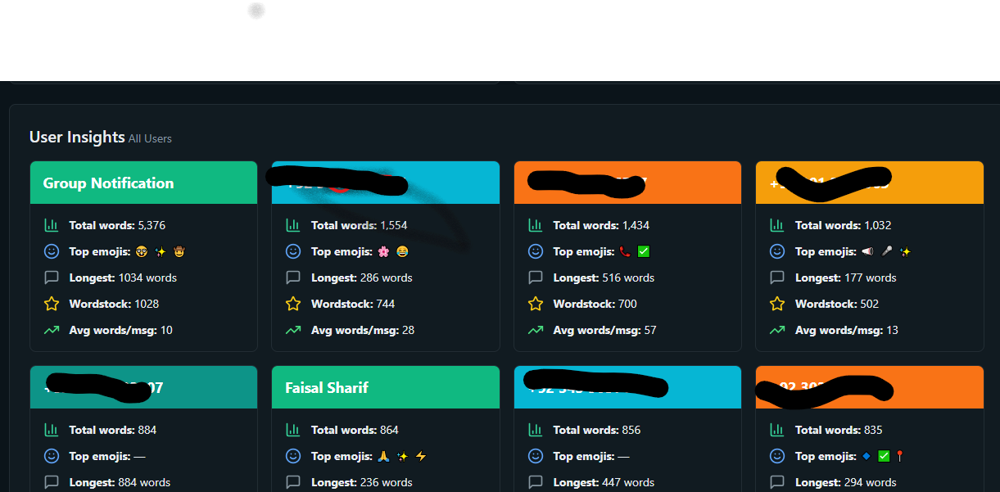
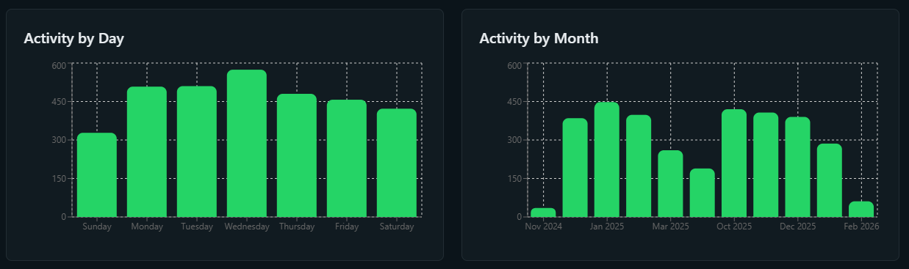

This highly interactive tool instantly analyzes group and personal WhatsApp chats. Built exclusively using TypeScript and client-side logic, there is absolutely no backend or database required. Since the chat data is visualized locally in the browser, it guarantees 100% data privacy for users.
The dashboard comprehensively interprets exported text files, generating advanced insights like total messages, peak active hours, individual user analytics, and a custom mood detection system.



